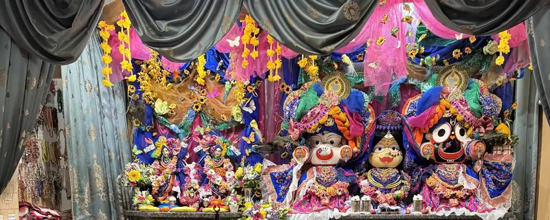

Кои сме ние
Общност в България
В България изповеданието присъства от 1991 г. и е регистрирано вероизповедание, самостоятелно юридическо лице с дейност в цялата страна.
Част е от Международното общество за Кришна съзнание (ИСКОН), духовно движение, основано през 1966 г. в Ню Йорк.